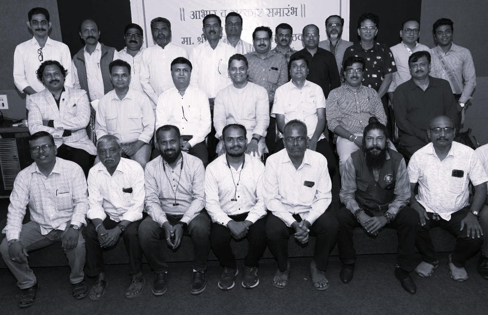

भारतीय कलाप्रसारिणी सभा आणि अभिनव कला महाविद्यालयाचे बीज चित्रकलाचार्य कै. नारायणराव ई. पुरम साहेबांनी लावले. गरजू आणि गरीब तरुणांना अल्प खर्चात चित्रकला शिकवण्याची तीव्र इच्छा कै. पुरम साहेबांच्या मनात होती. म्हणूनच त्यांनी प्रथम १९२० साली पुण्यामध्ये जोगेश्वरीच्या देवळाजवळ कै. भोंडे वकिलांच्या वाड्यात चित्रकला वर्ग सुरू केले.
नारायणराव हे उत्तम हाडाचे चित्रकार असल्याने त्यांची कलेबाबतची आस्था सर्वत्र दिसून येते. औंध संस्थांचे राजे बाळासाहेब पंतप्रतिनिधी यांच्या सहवासात आणि संपर्कात ते होते. १९३४ साली कै. पुरम साहेबांनी गिरगाव मुंबई येथे प्रार्थना समाजाच्या समोर इन्स्टिट्यूट ऑफ फाईन आर्ट्स ही संस्था सुरू केली. तसेच १९३५ साली पुणे येथे इन्स्टिट्यूट ऑफ मॉडर्न आर्ट्स ही संस्था राजा धनराज गिरजी हायस्कूलच्या आवारात सुरू केली.
त्या संस्थेचे उद्घाटन औंध संस्थानाचे राजे कै. बाळासाहेब पंतप्रतिनिधी यांच्या हस्ते संपन्न झाले आणि या कार्यक्रमाचे अध्यक्ष स्थान प्रसिद्ध साहित्यिक कै. आचार्य प्रल्हाद केशव अत्रे यांनी भूषविले होते. सदर संस्थेला १९३७ साली राज्यसरकारची मान्यता मिळाली. या ठिकाणी जागेची टंचाई लक्षात घेऊन या संस्थेचे काही वर्ग भाऊ महाराज बोळ येथील कॉन्ट्रॅक्टर रानडे यांच्या वाड्यात आणि जोगेश्वरी जवळील भोंडे वकिलांच्या वाड्यात भरविले जात असत.
काही दिवसांनी हे वर्ग लक्ष्मी रोडवरील पायोनियर बिल्डिंगमध्ये होऊ लागले. पुणे आणि मुंबई येथील संस्थांमध्ये तीन-तीन दिवस राहून दोन्हीकडचा कारभार सांभाळणे हे पुरम साहेबांच्या दृष्टीने तारेवरची कसरत होत होती. म्हणूनच कै. व्ही. के. पाटील, कै. मुजुमदार, कै. डी. के. डेंगळे व कै. कुलकर्णी हे त्यांच्या कामात सहाय्य करू लागले.
१९३५ साली स्थापन झालेली इन्स्टिट्यूट ऑफ मॉडर्न आर्ट्स ही संस्था नंतर अभिनव कला महाविद्यालय ऑफ ड्रॉइंग अँड पेंटिंग आणि अप्लाईड आर्ट व आर्किटेक्चर या नावाने ओळखली जाऊ लागली. १९५२ साली ललित कला महामंडळ या संस्थेची स्थापना झाली, या संस्थेच्या पदाधिकाऱ्यांच्या मंडळात पुरम साहेब आणि इतरांचा समावेश होता. त्यानंतर लगेचच या संस्थेचे १८६० च्या सोसायटी ॲक्टखाली व १९५० च्या बॉम्बे पब्लिक ट्रस्टखाली रजिस्ट्रेशन अनु. नंबर २८६४ दिनांक ०३ फेब्रुवारी १९५३ व एफ १३१ दिनांक २५ मार्च १९५३ या अन्वये झाले.
१२ ऑगस्ट १९६२ या दिवशी भारतीय कलाप्रसारणी सभा या संस्थेची स्थापना झाली. अभिनव कला महाविद्यालय स्वतःच्या भव्य इमारतीमध्ये उभारले जावे हे पुरम साहेबांचे स्वप्न त्यांच्या हयातीत पूर्ण झाले. आज संस्थेची इमारत टिळक रोड, बाजीराव रोड हे दोन रस्ते जेथे मिळतात त्या चौकात दिमाखात उभी आहे.
शिवाय कलेतील समाजकार्याची दखल म्हणून पुरीचे शंकराचार्य जेव्हा पुण्याला आले तेव्हा त्यांनी कै. पुरम साहेबांना चित्रकलाचार्य ही पदवी देऊन सन्मानित केले होते. तसेच नारायणराव यांनी आपले सर्व आयुष्य वेचून कलेच्या क्षेत्रात जे बहुमोल योगदान दिले याचा यथोचित सन्मान म्हणून पुणे महानगरपालिकेने संस्थेच्या समोरच्या चौकाला चित्रकलाचार्य नारायणराव ई. पुरम चौक हे नाव देण्यात आले.
संस्थेचा मोठा विस्तार व्हावा, मोठी जागा घ्यावी, तसेच संस्था पदवी कोर्ससाठी पुणे विद्यापीठाशी संलग्न करावी हे त्यांचे स्वप्न होते. ते ही आर्किटेक्चरच्या पदवी अभ्यासक्रमाला पुणे विद्यापीठाची संलग्नता मिळाल्याने पूर्ण झाले. कलाक्षेत्रातील काम करणारी मुंबईच्या जे. जे. स्कूल ऑफ आर्टच्या धर्तीवर काम करणारी या प्रकारची पहिलीच एकमेव संस्था म्हणून भारतीय कला प्रसारणी सभा न्यासाकडे पाहिले जाते.
पुरम साहेबांनी लावलेल्या रोपट्याचा आता महावटवृक्ष झाला आहे. आता ही संस्था फाईन आर्ट्स, अप्लाईड आर्ट्स, टिचर्स ट्रेनिंग, आर्किटेक्चर या क्षेत्रामध्ये पदवी आणि पदविकापर्यंत शिक्षण देणारी अभिनव कला महाविद्यालय म्हणून प्रसिद्ध आहे.
पुढे संस्थेच्या कार्यभार बराच काळ चित्रकार कै. प्रा. दिवाकर डेंगळे सरांनी चालवला, संस्था वृद्धिंगत केली आणखी एक शाखा पाषाण, पुणे येथे स्वतंत्र जागेत सुरू केली. त्यांचे सोबत कै. व्ही. के. पाटील, कै. कुलकर्णी, कै. मुजुमदार यांनी काम पाहिले. त्यावेळचे महाराष्ट्र राज्याचे विधानसभेचे सभापती कै. एस. एल. सिलम हे संस्थेचे अध्यक्ष बनले आणि नंतरच्या काळात माजी राष्ट्रपती डॉ. राजेंद्र प्रसाद, माजी पंतप्रधान कै. मोरारजी देसाई, माजी मुख्यमंत्री कै. यशवंतराव चव्हाण इत्यादी नामवंतांनी संस्थेच्या कामाबाबत समाधान व्यक्त केले होते.
तद्नंतर संस्थेचा कार्यभार दिवंगत सचिव श्री. भालचंद्र मोहनीराज पाठक साहेब यांनी स्वीकारला. पाषाणच्या जागेमध्ये महाविद्यालयाच्या नवीन इमारती उभ्या रहाव्यात आणि कलेचे स्वतंत्र विद्यापीठ उभारले जावे हे स्वप्न उराशी बाळगून संस्थेचा कार्यभार त्यांनी चालविला. ते करत असताना समाजकंटकांपासून पाषाण येथील जागेचा बचाव करण्यासाठी कायदेशीर लढा दिला हे मोलाचे कार्य त्यांनी केले. कै. पाठक साहेबांचे काम खऱ्या अर्थाने संस्थापकां एवढेच महत्त्वाचे आहे.
दिवंगत सचिव श्री. भालचंद्र मोहनीराज पाठक साहेब हे जागतिक दर्जाचे संशोधक होते. त्यांनी केलेल्या संशोधनांस भारत सरकारने देखील नावाजले आहे. सर्वसामान्याविषयी आपुलकीची भावना, माणुसकी आणि गरीब, गरजूंना मनापासून मदत करणे, अन्यायाविरुद्ध लढा देणे हे त्यांच्या व्यक्तिमत्त्वातले महत्त्वाचे गुण होते.
सद्यस्थितीत श्री. पुष्कराज भालचंद्र पाठक साहेब संस्थेचे सचिव म्हणून कार्यरत आहेत. संस्था नवी भरारी घेत माजी सर्वच संस्था चालकांच्या उराशी असलेले स्वप्न साकार करण्याच्या दृष्टीने प्रयत्नशील आहे. कला महाविद्यालयांच्या निर्मितीपासूनचे गुंतागुंतीच्या प्रश्नांची सोडवणूक करून ते सचिव साहेबांनी मार्गी लावले आहेत आणि इतरही शैक्षणिक प्रश्न जसे की फाईन आर्ट्स, अप्लाईड आर्ट्स यांचे डिग्री मध्ये रूपांतरण होणेकरता तसेच अनुदानाचा प्रश्न सोडविणेकरिता महत्त्वाची अशी भूमिका घेत आहेत.
तसेच विविध सामाजिक कार्यात कलेच्या माध्यमातून सहभाग घेऊन योगदान देत आहेत. तसेच शिल्पकलेसारखा अभ्यासक्रम नव्याने सुरू करून त्याबाबतची स्वतंत्र शाखा सुरू करण्याबाबत प्रयत्नशील आहेत. अश्या अनेक विद्यार्थी हिताच्या दृष्टीने लागणाऱ्या सर्व अद्ययावत सुविधा उपलब्ध करून देण्यासाठी आवश्यक त्या उपाययोजना करण्यात येत आहेत.
संस्थेने कलाक्षेत्रात व्यवसाय करणारे यशस्वी अनेक नामवंत चित्रकार, आर्किटेक्ट, शिक्षक, फोटोग्राफर निर्माण केले. आज ही संस्था कला शिक्षण देणारी एक महाराष्ट्रातील अग्रगण्य संस्था म्हणून ओळखली जाते. दिवंगत सचिव श्री. भालचंद्र मोहनीराज पाठक साहेबांनी पाहिलेले वास्तुकला व ललित कलेचे विद्यापीठाचे स्वप्न न्यासाचे विश्वस्त नक्की पूर्ण करतील.